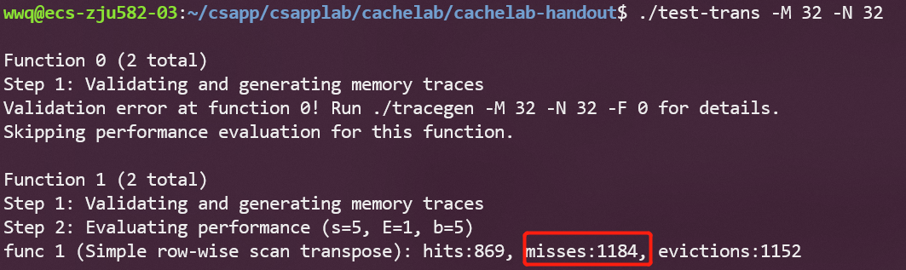

简介 Cache Lab 共分为两部分，PartA需要模拟cache运行的过程，就是模拟cache的行为。PartB是一个矩阵转置，给出了三种数据范围，我们的任务就是尽可能提高高速缓存的命中率，系统会根据我们的miss，hit，eviction这三个值的大小进行打分。cachelab.dvi (cmu.edu) 实验先导部分)
在开始前，需要执行以下的命令：
1 2 3 4 5 6 sudo apt install valgrind valgrind --version make clean make
Part A 简介 本部分的要求，是告诉我们模拟缓存的行为不是真实缓存，内存的数据不用存储，不用进行块便宜，地址里的b因此不太重要，只要能计算hits、miss、evictions的值即可。然后就是模拟器需要适用于不同的（s, b, E），同时给出运行时间。最后就是要求我们使用LRU的策略进行替换。
本题需要做的就是用C语言写一个程序csim.c，这个程序的表现需要和csim-ref一样，也就是模仿一个cache的行为，不用模仿全部行为，只需要让csim.c能对S（Store）、L（Load）、M（Modify）这三种类型的地址操作，表现出MISS、HIT、EVICTION即可。
这里需要再考量的是，如何实现LRU。LRU即最近最少访问，大家应该在学习操作系统的时候接触过这个概念。这个算法需要解决两个问题：
用什么代表某一个行的最近访问次数
怎么找到这个最近最少访问的行
对于1，我们可以维护一个时间变量T，每次访存了这一行就更新，那么T最小或最大的【可见具体实现的逻辑】就是最近最少访问的。
对于2，我们可以采取直接遍历做min求最小，或者使用hash和链表，但是在缓存中需要越快越好，且不能太占空间，因此用直接遍历的方法是可行的。
自带函数介绍 在先导ppt里给出了几个函数的介绍：
getplot()
如果函数声明丢失，则在Unix命令行上自动解析元素，通常在循环中调用以检索参数，它的返回值存储在局部变量中。 即该函数是个命令行解析工具
1 2 #include <unistd.h> #include <getopt.h>
fscanf()
读入测试文件的，ppt也给出了示例代码。
Malloc/free
分配和释放内存空间的函数
Some_pointer_you_malloced = malloc(sizeof(int));
分配了内存用完的时候记得释放，还有不要释放没有分配的内存。
核心代码 1.定义数据结构 在ppt里，给出了Part A需要用到的结构体：
讲义告诉我们，不需要处理B，只需要有有效位、标记位和时间戳即可。因此我们可以写出以下结构体：
1 2 3 4 5 typedef struct cache_line { int valid; int tag; int stamp; } Cache_line;
然后我们可以再定义Cache结构体：
1 2 3 4 5 6 typedef struct cache_ { int S; int E; int B; Cache_line **line; } Cache;
2.初始化Cache 定义一个cache[S][E]大小的二维数组（using malloc），这样cache就模拟好了。
1 2 3 4 5 6 7 8 9 10 11 12 13 14 15 16 17 18 void Init_Cache (int s, int E, int b) { int S = 1 << s; int B = 1 << b; Cache *cache = (Cache *) malloc (sizeof (Cache)); cache->S = S; cache->E = E; cache->B = B; cache->line = (Cache_line **)malloc (sizeof (Cache_line *) * S); for (int i = 0 ;i < S;i++) { cache->line[i] = (Cache_line *)malloc (sizeof (Cache_line) * E); for (int j = 0 ; j < E; j++) { cache->line[i][j].valid = 0 ; cache->line[i][j].tag = 0xffffffff ; cache->line[i][j].stamp = 0 ; } } }
上面cache->line[i]的初始化，刚开始没理解，写成了sizeof(Cache_line *)，导致整个函数在某个得分点报错，虽然不知道其他是怎么过的，后来仔细比对才发现是这个地方的问题。
有初始化，动态分配空间，就应该考虑到释放：
1 2 3 4 5 6 7 8 9 10 void free_Cache () { int S = cache->S; for (int i = 0 ; i < S; i++) { free (cache->line[i]); } free (cache->line); free (cache); }
3. LRU时间戳实现 这里的逻辑是，有缓存的时间戳要每次增加，如果被访问到了，就将当前的时间戳置为0，因此时间戳越大则表示该行最后访问的时间越久远。下面是缓存更新的代码：
1 2 3 4 5 6 7 8 9 10 11 void update (int i, int op_s, int op_tag) { cache->line[op_s][i].valid = 1 ; cache->line[op_s][i].tag = op_tag; for (int k = 0 ; k < cache->E; k++) { if (cache->line[op_s][k].valid == 1 ) { cache->line[op_s][k].stamp++; } } cache->line[op_s][i].stamp = 0 ; }
这段代码在找到要进行的操作行后调用（无论是不命中还是命中，还是驱逐后）。前两行是对有效位和标志位的设置，与时间戳无关，主要关注后几行：
遍历组中每一行，并将它们的值加1，也就是说每一行在进行一次操作后时间戳都会变大，表示它离最后操作的时间变久
将本次操作的行时间戳设置为最小，也就是0
因此，每次只需要找到时间戳最大的行进行替换即可，就是找最大值，写法也比较常规：
1 2 3 4 5 6 7 8 9 10 11 12 13 int find_LRU (int op_s) { int max_index = 0 ; int max_stamp = 0 ; for (int i = 0 ;i < cache->E; i++) { if (cache->line[op_s][i].stamp > max_stamp) { max_stamp = cache->line[op_s][i].stamp; max_index = i; } } return max_index; }
4. 缓存搜索及更新 在得知要操作的op_s以及标志位op_tag后，判断是miss还是hit，或者是应该eviction调用find_LRU。
1 2 3 4 5 6 7 8 9 10 int get_index (int op_s, int op_tag) { for (int i = 0 ; i < cache->E; i++) { if (cache->line[op_s][i].valid && cache->line[op_s][i].tag == op_tag) { return i; } } return -1 ; }
遍历所有行，如果某一行有效，且标志位相同，则hit，返回该索引。否则，miss，返回 -1。当接收到-1后，有两种情况：
冷不命中。组中有空行，只不过还未操作过，有效位为0，找到这个空行即可
所有行都满了。那么就要用到上面得 LRU 进行选择驱逐
所以，设计一个判满的函数：
1 2 3 4 5 6 7 8 int is_full (int op_s) { for (int i = 0 ;i < cache->E; i++) { if (!cache->line[op_s][i].valid) return i; } return -1 ; }
当扫描完成后，得到对应行的索引值，就可以调用缓存更新函数进行更新了。整体调用如下：
1 2 3 4 5 6 7 8 9 10 11 12 13 14 15 16 17 18 19 20 21 22 23 24 25 void update_info (int op_tag, int op_s) { int index = get_index(op_s, op_tag); if (index == -1 ) { miss_count++; if (verbose) printf ("miss " ); index = is_full(op_s); if (index == -1 ) { eviction_count++; if (verbose) printf ("eviction" ); index = find_LRU(op_s); } update(index, op_s, op_tag); } else { hit_count++; if (verbose) printf ("hit" ); update(index, op_s, op_tag); } }
至此，Part A的核心部分函数就编写完了，下面的内容与题目相关。
5. 指令解析 设计的数据结构解决了对 Cache 的操作问题，LRU 时间戳的实现解决了核心的驱逐问题，缓存扫描解决了对块中哪一列进行操作的问题，而应该对哪一块进行操作呢？接下来要解决的就是指令的解析问题了。[space]operation address, size的形式，operation很容易获取，重要的是从address中分别获取我们需要的s和tag，address结构如下：
address是一个无符号数。
1 int op_tag = address >> (b + s);
获取s，，可以先将address右移b位，然后再将s左边的部分用掩膜盖掉即可，掩膜可以使用无符号的0xffffffff右移32-s位得到，因为C中右移默认是算术右移，因此得用无符号的0xff…才可得到合适的掩膜:
1 int op_s = (address >> b) & ((unsigned ) (-1 ) >> (8 * sizeof (unsigned ) - s));
由于数据读写对于本模拟器而言是没有区别的，因此不同的指令对应的知识Cache更新次数的问题：
1 2 3 4 5 6 7 8 9 10 11 12 13 14 15 16 17 18 19 20 21 22 23 24 25 26 27 28 29 30 31 32 33 34 void get_trace (int s, int E, int b) { FILE *pFile; pFile = fopen(t, "r" ); if (pFile == NULL ) { exit (-1 ); } char identifier; unsigned address; int size; while (fscanf (pFile, " %c %x,%d" , &identifier, &address, &size) > 0 ) { int op_tag = address >> (s + b); int op_s = (address >> b) & ((unsigned )(-1 ) >> (8 * sizeof (unsigned ) - s)); switch (identifier) { case 'M' : update_info(op_tag, op_s); update_info(op_tag, op_s); break ; case 'L' : update_info(op_tag, op_s); break ; case 'S' : update_info(op_tag, op_s); break ; } } fclose(pFile); }
update_info就是对 Cache 进行更新的函数，前面已经讲解。如果指令是M则一次存储一次加载，总共更新两次，其他指令只用更新一次，而I无需考虑。
1 2 3 4 5 6 7 8 9 10 11 12 13 14 15 16 17 18 19 20 21 22 23 24 25 26 27 28 29 30 31 32 33 34 35 36 37 38 39 40 41 42 43 44 45 46 47 48 49 50 51 52 53 54 55 56 57 58 59 void print_help () { printf ("** A Cache Simulator by Deconx\n" ); printf ("Usage: ./csim-ref [-hv] -s <num> -E <num> -b <num> -t <file>\n" ); printf ("Options:\n" ); printf ("-h Print this help message.\n" ); printf ("-v Optional verbose flag.\n" ); printf ("-s <num> Number of set index bits.\n" ); printf ("-E <num> Number of lines per set.\n" ); printf ("-b <num> Number of block offset bits.\n" ); printf ("-t <file> Trace file.\n\n\n" ); printf ("Examples:\n" ); printf ("linux> ./csim -s 4 -E 1 -b 4 -t traces/yi.trace\n" ); printf ("linux> ./csim -v -s 8 -E 2 -b 4 -t traces/yi.trace\n" ); } int main (int argc, char *argv[]) { char opt; int s, E, b; while (-1 != (opt = getopt(argc, argv, "hvs:E:b:t:" ))) { switch (opt) { case 'h' : print_help(); exit (0 ); case 'v' : verbose = 1 ; break ; case 's' : s = atoi(optarg); break ; case 'E' : E = atoi(optarg); break ; case 'b' : b = atoi(optarg); break ; case 't' : strcpy (t, optarg); break ; default : print_help(); exit (-1 ); } } Init_Cache(s, E, b); get_trace(s, E, b); free_Cache(); printSummary(hit_count, miss_count, eviction_count); return 0 ; }
成功通过part A:
Part B 简介 该部分是在trans.c中编写矩阵转置的函数，在一个s=5，E=1，b=5的缓存中进行读写，使得miss的次数最少，测试矩阵的参数以及miss次数对应的分数如下：
由s=5,b=5，即可知我们总共有32个set，每组1行，每个block大小是32bytes，如图：
32 × 32 开始之前，我们得先了解一下何为分块，为什么分块?
题目给出了未优化，直接转置的代码：
1 2 3 4 5 6 7 8 9 void trans_submit (int M, int N, int A[N][M], int B[M][N]) { int i, j, tmp; for (i = 0 ; i < N; i++) { for (j = 0 ; j < M; j++) { tmp = A[i][j]; B[j][i] = tmp; } } }
这里我们会按行优先读取 A 矩阵，然后一列一列地写入 B 矩阵。
以第1行为例，在从内存读 A[0][0] 的时候，除了 A[0][0] 被加载到缓存中，它之后的 A[0][1]---A[0][7] 也会被加载进缓存。
但是内容写入 B 矩阵的时候是一列一列地写入，在列上相邻的元素不在一个内存块上，这样每次写入都不命中缓存。并且一列写完之后再返回，原来的缓存可能被覆盖了，这样就又会不命中。
当前n为32，每次缓存能够存入A的8个元素，因此A的一行能够写入4组缓存，总共set有32组，所以整个缓存能够存储8行矩阵A，也即矩阵A的1/4，每隔8行，就会在缓存中覆盖之前的记录。下图中的0,1代表的应该是一个set。而A与B的地址是相连的，因此，如果A与B访问的是同一个位置的元素，那么缓存将会被覆盖。
对于A，我们只需分析block造成的影响，一个block能够容纳8个int，因此A的每一行会有32/8=4次不命中；而对于B，每一列有32次不命中，由此算出总的不命中的次数为4×32 + 32 × 32 = 1152。跑一下结果如下：

可以发现miss数为1184，比预想的多了32次。
根据提示，我们需要使用分块技术来提升缓存命中率。在进行分块前，让我们先探讨一下，A的读取与B的写入在缓存中是否会发生冲突：
如果i == j，因为对应位置相同，对应到缓存的行应该也会相同，所以会冲突
如果i != j，A会缓存i行的内容，而B会缓存j行的内容，两者理论上是不会出现在同一组缓存中的。
如果我们暂时忽略对角线的影响，假设A和B是不会发生冲突的，由于cache在行上最多可以存8行，列上最多存8个元素，因此，我们可以选择分块的大小为8×8。
1 2 3 4 5 6 7 8 9 10 11 12 13 char trans_32_desc[] = "32 simple transpose" ;void trans_32 (int M, int N, int A[N][M], int B[M][N]) { for (int i = 0 ;i < N;i += 8 ) { for (int j = 0 ;j < M;j += 8 ) { for (int n = i; n < i + 8 ;n++) { for (int m = j;m < j + 8 ;m++) { B[m][n] = A[n][m]; } } } } }
从以上分块的代码分析得出，对于每个分块，A的每一行的第一个元素不会命中，所以对A来说有8次，还得加上对角线的7次，共15次；对于B来说，B载入的第一列的所有元素也均不会命中，后面的元素才会在缓存命中，因此也为8次
跑完结果如下：
miss次数与我们预估的比较接近，但是少了一点。
题目又给了我们提示，让我们能够使用12个局部变量存储数据，所以我们能够将A的分块的每一行，即8个元素，使用局部变量进行存储。能够保证A的对角线元素不会被覆盖，但无法保证B的对角线元素被覆盖。
1 2 3 4 5 6 7 8 9 10 11 12 13 14 15 16 17 18 19 20 21 22 23 24 25 26 27 28 char trans_32_uprolling_desc[] = "32 uprolling transpose" ;void trans_32_uprolling (int M, int N, int A[N][M], int B[M][N]) { for (int i = 0 ;i < N;i += 8 ) { for (int j = 0 ;j < M;j += 8 ) { for (int k = i; k < i + 8 ;k++) { int tmp_1 = A[k][j]; int tmp_2 = A[k][j + 1 ]; int tmp_3 = A[k][j + 2 ]; int tmp_4 = A[k][j + 3 ]; int tmp_5 = A[k][j + 4 ]; int tmp_6 = A[k][j + 5 ]; int tmp_7 = A[k][j + 6 ]; int tmp_8 = A[k][j + 7 ]; B[j][k] = tmp_1; B[j + 1 ][k] = tmp_2; B[j + 2 ][k] = tmp_3; B[j + 3 ][k] = tmp_4; B[j + 4 ][k] = tmp_5; B[j + 5 ][k] = tmp_6; B[j + 6 ][k] = tmp_7; B[j + 7 ][k] = tmp_8; } } } }
结果如下：
miss 小于300，达到要求
64 × 64 由于矩阵变大了，现在每4行就会发生矩阵覆盖的情况，如果我们按照4×4的分块，跑一下结果，看看会是如何：
发现miss次数有1700，距离1300还是差了很多的。
借鉴相关博主的经验，发现还是得考虑8 × 8的分块，由于仍存在每4行就会占满一个缓存的问题，所以需要将8 × 8的分块的内部分成4个4 × 4的小分块分别处理：
第一步，将A的左上和右上一次性复制给B
第二步，用本地变量把B的右上角存储下来
第三步，将A的左下复制给B的右上
第四步，利用上述存储B的右上角的本地变量，把A的右上复制给B的左下
第五步，把A的右下复制给B的右下
这里B因为是转置后的，所以如果A的某个元素为i行j列，B对应的应为j行i列（刚开始没注意这个，总觉得怪怪的，后面理解了，就还好）
这里直接搬运博主画的图了：
这里的A和B均表示两个矩阵中的 8 × 8 块
第 1 步：
此时B的前 4 行就在缓存中了，接下来考虑利用这个缓存 。可以看到，为了利用A的缓存，第 2 块放置的位置实际上是错的，接下来就用本地变量保存B中第2块的内容
第 2 步：
用本地变量把B的第2块存储下来
1 2 3 4 5 6 for (int k = j; k < j + 4 ; k++){ a_0 = B[k][i + 4 ]; a_1 = B[k][i + 5 ]; a_2 = B[k][i + 6 ]; a_3 = B[k][i + 7 ]; }
第 3 步：
现在缓存中还是存着B中上两块的内容，所以将A的第3块内容复制给它
第 4/5 步：
现在缓存已经利用到极致了，可以开辟B的下面两块了
这样就实现了转置，且消除了同一行中的冲突，具体的diamagnetic如下：
1 2 3 4 5 6 7 8 9 10 11 12 13 14 15 16 17 18 19 20 21 22 23 24 25 26 27 28 29 30 31 32 33 34 35 36 37 38 39 40 41 42 43 44 45 46 47 48 49 50 51 52 53 54 55 56 57 58 59 60 61 62 63 64 65 66 67 68 void trans_64 (int M, int N, int A[N][M], int B[M][N]) { int a_0, a_1, a_2, a_3, a_4, a_5, a_6, a_7; for (int i = 0 ;i < N;i += 8 ) { for (int j = 0 ;j < M; j += 8 ) { for (int k = i;k < i + 4 ;k++) { a_0 = A[k][j]; a_1 = A[k][j + 1 ]; a_2 = A[k][j + 2 ]; a_3 = A[k][j + 3 ]; a_4 = A[k][j + 4 ]; a_5 = A[k][j + 5 ]; a_6 = A[k][j + 6 ]; a_7 = A[k][j + 7 ]; B[j][k] = a_0; B[j + 1 ][k] = a_1; B[j + 2 ][k] = a_2; B[j + 3 ][k] = a_3; B[j][k + 4 ] = a_4; B[j + 1 ][k + 4 ] = a_5; B[j + 2 ][k + 4 ] = a_6; B[j + 3 ][k + 4 ] = a_7; } for (int k = j;k < j + 4 ;k++) { a_0 = B[k][i + 4 ]; a_1 = B[k][i + 5 ]; a_2 = B[k][i + 6 ]; a_3 = B[k][i + 7 ]; a_4 = A[i + 4 ][k]; a_5 = A[i + 5 ][k]; a_6 = A[i + 6 ][k]; a_7 = A[i + 7 ][k]; B[k][i + 4 ] = a_4; B[k][i + 5 ] = a_5; B[k][i + 6 ] = a_6; B[k][i + 7 ] = a_7; B[k + 4 ][i] = a_0; B[k + 4 ][i + 1 ] = a_1; B[k + 4 ][i + 2 ] = a_2; B[k + 4 ][i + 3 ] = a_3; } for (int k = i + 4 ;k < i + 8 ;k++) { a_4 = A[k][j + 4 ]; a_5 = A[k][j + 5 ]; a_6 = A[k][j + 6 ]; a_7 = A[k][j + 7 ]; B[j + 4 ][k] = a_4; B[j + 5 ][k] = a_5; B[j + 6 ][k] = a_6; B[j + 7 ][k] = a_7; } } } }
ok，至此miss降低到1228。
61 × 67 本题，依然使用分块处理，使用16 * 16：
1 2 3 4 5 6 7 8 9 10 11 12 char trans_61_67_desc[] = "61 * 67 transpose" ;void trans_61_67 (int M, int N, int A[N][M], int B[M][N]) { for (int i = 0 ;i < N;i += 16 ) { for (int j = 0 ;j < M;j += 16 ) { for (int m = i; m < i + 16 && m < N;m++) { for (int n = j; n < j + 16 && n < M;n++) { B[n][m] = A[m][n]; } } } } }
miss次数为1993，擦线飘过
最后将代码放进transpose_submit中，在运行./driver.py，即可得到cachelab的分数
总结 cache Lab让人有了一点leecode刷题的感觉了🤣，还是一如既往地借鉴各路大神的回答。还是比较建议大家在做lab之前，能够把课后习题给做一遍的（如果有大佬听过课就觉得理解透彻了，可以忽略）。通过cache lab，会对缓存的机制比较了解了，也基本理解局部性原理的意义，以前背八股的时候，局部性原理可能就是有个印象，与代码优化也不会产生任何联系。
Part A可以说是对C语言的考验，虽然提到了LRU，但是仅仅是最暴力的解法，如果用链表来写，那又是另一回事儿了。
Part B则是对矩阵的理解，转置竟然还能玩出这么多花样，分块是此前从未想到过的，而且最好的解题方法，还是需要自己去分析和画图，才能真正理解解法的意图。
参考链接： CSAPP-Lab05 Cache Lab 深入解析 - Deconx - 博客园 (cnblogs.com) CS:APP3e 深入理解计算机系统_3e CacheLab实验 - QiuhaoLi - 博客园 (cnblogs.com)